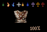

If you're already familiar with this page, you may want to go directly to the SHOP INDEX in order to view the individual SHOP PAGES. If not, you should check the SHOP ASSISTANT page first. Here you'll find all you need in order to understand the Shop Pages.Two other pages will be referred to from the SHOP ASSISTANT page. The BASIC PRICES page contains the basic numerical data upon which ALL THE OTHER PAGES are based. The ITEM GROUP TABLE contains information on Item Groups bought by Shops.
I have also compiled some comparative SELL/BUY PRICE TABLES, with statistics on the various Shops' pricing policies. Finally, I have compiled a comprehensive ITEM AVAILABILITY/PRICE INDEX of all Items which can be bought or sold in Midkemia, stating where they can be bought or sold, and at what prices.
SHOP ASSISTANT
BASIC PRICES
ITEM GROUP TABLE
SELL/BUY PRICE TABLES
ITEM AVAILABILITY/PRICE INDEX